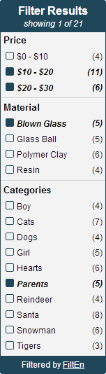

FiltEn is a search filtering tool for anything with search criteria. FiltEn automatically scans a set of search results, generates the set of search criteria, and displays a menu that allows users to filter results by selecting one or more search criteria.
At a fraction of the cost of other offerings, FiltEn is a simple, yet powerful tool that does one thing and does it really well. FiltEn is designed to be minimally-invasive and, besides the menu, has no visual side-effects. FiltEn slips right into your webpage. There's no plugin or extra software to install; it runs right on the page so there's no need to wait on somebody else's server to read your search results. Installation is a breeze, just check out the documentation.
If you're ready to enhance your customers' search experience, send us an email at filten-info@aquilats.com.